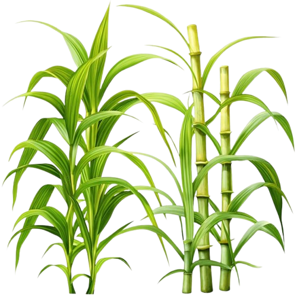

02 / ExploraFormas · Materiales · Oficios
Los instrumentos
Acércate, observa y descubre. Cada pieza tiene algo que contar.
 Saberes y materiales
Saberes y materiales
Selecciona un detalle para descubrirlo.
El carrizo
Su cuerpo se elabora con carrizo: un tallo hueco que se transforma para construir el instrumento.

Selección del carrizo
Se selecciona el tallo que dará forma al instrumento.
1 de 5
¿Qué material forma el cuerpo de la flauta?
Mira el instrumento y conecta lo que descubriste.